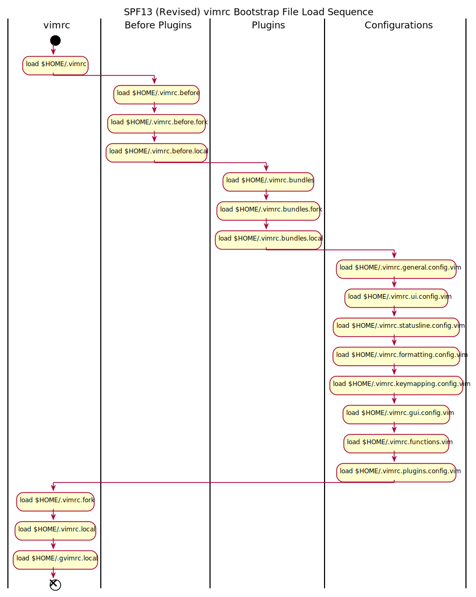

I have been using spf13-vim and it was the trigger that got me interested into enhancing Vim for my work. I have also tried to improve the dotfiles, so that I can be more productive in my work.
Here is my contribution spf13-vim as means to pay back to the Open Source Community.
Aside to the information in spf13-vim.
This is minimalist Vim plugin manager and allows parallel installation of vim plugins.
This nodejs based vim plugin utilizes Vim 8 asynchronous features and gives Vim a powerful auto-completion feature that maybe more powerful than what VSCode has. With Language Server Protocol (LSP) support, so it is up to the users to install the languages support that they want.
The .vimrc is revamped and coded in vim9.
Here is my analysis of spf13-vim initial .vimrc bootstrap and refactored for clarity. 
Please do feel free to support, contribute and suggest ways to improve and enhance this project for the benefit for the community.
This is very useful for me for making diaries, notes, TODO list for my work and personal needs. In fact, this page is done using vimwiki and generated as HTML using Vimwiki2HTML function